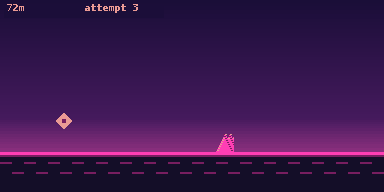
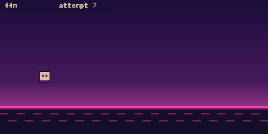

Rhythm platformer
geo
An endless side-scroller in colour. Jump spikes and gaps, with physics tuned to be beatable.
geo.py7.0 KB285 lines
Performance: smoothRuns reasonably well. It is fast, so expect to learn the jumps over a few tries.
Controls
| OK, EXE or Up | Jump (hold to keep jumping) |
| Quit | BACK |
How to run it
- Download the
geo.pyfile or thegeo.zipfile. - (Optional) Unzip the
geo.zipand take the Python file out of it. - Connect your calculator via a USB-C cable.
- Place the Python file alongside the
@MainMemoryfolder (NOT inside of it, ignore theCaptfolder if it's present). - Eject the USB-C attached to the calculator.
- Open the Python module on the calculator.
- Press on Tools.
- Select File.
- Select Open.
- Open the game file.
- Press the right arrow with line-in-front button on your calculator (next to the up button).
- Wait for your game to load.
- Enjoy.
If your browser or school blocks .py downloads, use the zip version and unzip it first. If the calculator says Invalid Data Size, the file was changed on the way over. Download it again and copy the new copy.